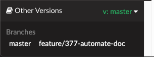

We would welcome you feedback and suggestions on how to improve E3SM Diags.
Drop a line to Jill (zhang40 .at. llnl.gov) or Ryan (forsyth2 .at. llnl.gov).
Or would you like to directly modify E3SM Diags? We tried to build the code in such a way
to make it easy to modify and add new backends, diagnostics, plots, variables, etc.
We would welcome your contributions. Create a development environment
and start coding away. Then submit your suggested modifications via a pull request.
Something incorrect? Something missing? Want to add some cool examples?
We would welcome your help updating and maintaining this documentation.
Here is a quick guide on how to get started doing just that.
This documentation is created using
Sphinx. Sphinx is an open-source tool
that makes it easy to create intelligent and beautiful documentation, written
by Georg Brandl and licensed under the BSD license.
The documentation is maintained in the main branch of the GitHub repository.
You can include code and its corresponding documentation updates in a single pull request (PR).
After merging a PR, GitHub Actions automates the documentation building process.
It pushes the HTML build to the gh-pages branch, which is hosted on GitHub Pages.
To modify the documentation, simply edit the files under docs/source.
To see the changes you made to the documentation, rebuild the web pages
cd <myDir>/e3sm_diags
conda activate e3sm_diags_env_dev
cd docs
python source/quickguides/generate_quick_guides.py # Run if quick-guide files were updated
make html # no version selector dropdown will be generated
View them locally in a web browser at file:///<myDir>/e3sm_diags/docs/_build/html/index.html.
Once you are satisfied with your modifications, commit and push changes to the repository:
cd <myDir>/e3sm_diags
# `docs/_build` is ignored by git since it does not need to be pushed
git add .
git commit "..."
git push <fork-origin> <branch-name>
<OPTIONAL> If you want to generate and view versioned docs:
# After commiting to your branch
cd docs
sphinx-multiversion source _build/html
# Check the `_build/html` folder for all generated versioned docs
# Open `_build/html/<your-branch>/index.html` to view in browser

Docs version selector dropdown in the bottom left-hand corner
Create a pull request from <your-fork>/e3sm_diags/branch-name to E3SM-Project/e3sm_diags/main.
Once this pull request is merged and GitHub Actions finishes building the docs, changes will be available on the
e3sm_diags documentation page.
sphinx-multiversion is configured to generate versioned docs for available tags and
branches on local, origin (the likely name for your <fork-origin>) and
upstream (the likely name for your <upstream-origin>).
Branches or tags that don’t contain both the sphinx source directory and the conf.py file will be skipped automatically.
Skipped versions include releases <v2.5.0 since the documention source was not included in those tagged releases.
Run sphinx-multiversionsource_build/html--dump-metadata to see which tags/branches matched.
The instructions below only apply for the initial configuration of the
Sphinx documentation on the Github repository. They are documented here
for reference only. Do not follow them unless you are setting up documentation
for a new repository. (Adapted from Sphinx documentation on GitHub.)
Create Sphinx conda environment (see above).
Create a new git branch (gh-pages):
$ git branch gh-pages
$ git checkout gh-pages
Clear out anything from the master branch and start fresh